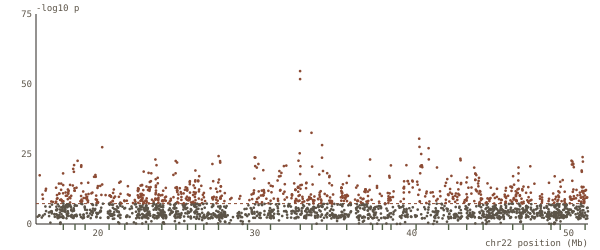
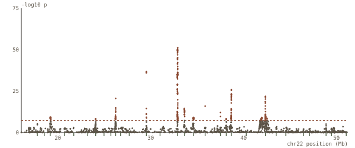

01 / GWAS
Does ancestry fool a GWAS?
Phenotypes simulated on real genotypes from 2,504 people, so the true causal variants are known. An unadjusted scan lights up the whole chromosome; ten principal components remove it. The cost, and what remains, is in the report.


40.51.18median inflation (λ)
24.00.1false windows
10replicates / scenario
Run end to end on macOS under bash 3.2 and zsh. The Slurm scripts are syntax-checked but have not been run on a scheduler; Linux and Windows are not yet tested. The report's last table says exactly this.